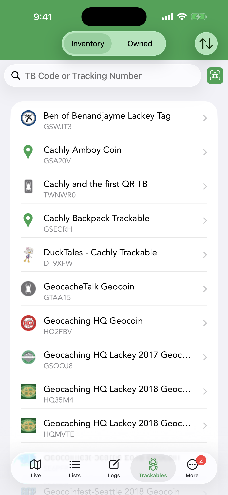
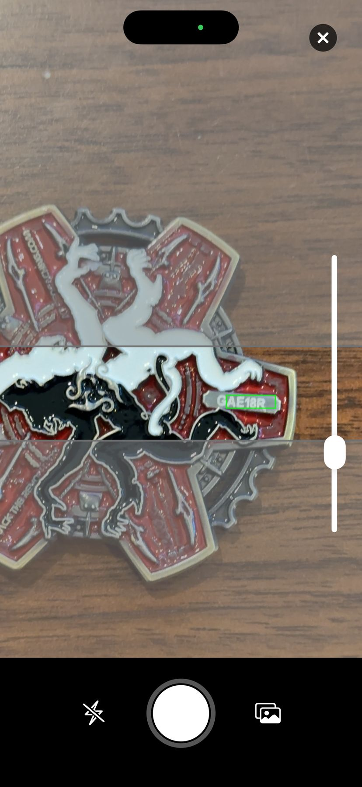
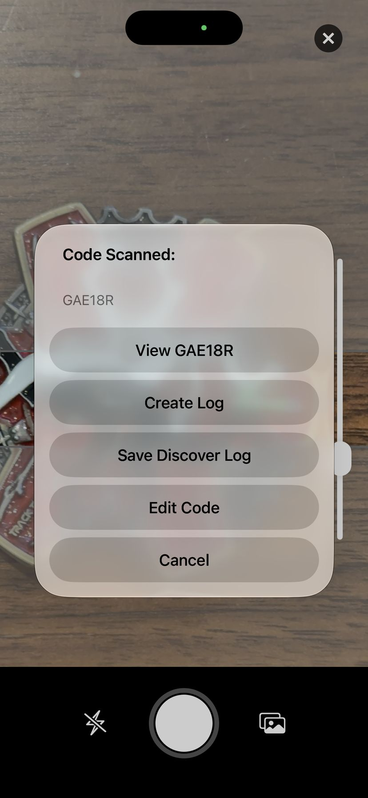

Trackables
Trackables are Travel Bugs and geocoins that move from cache to cache. The Trackables tab manages the ones in your inventory and the ones you own, and lets you log their movements.
Inventory & Owned

The Trackables tab has two views, switched at the top:
- Inventory — trackables you’re currently carrying (you grabbed or retrieved them).
- Owned — trackables you released into the wild, so you can follow their journeys.
Sort by Date of Last Log or Trackable Name with the sort icon, and find a specific item by entering its TB code or tracking number — or by scanning its QR code. Tap any trackable for a detailed view where you can log activities or see a map of its movement history.
Trackable Detail

Tapping a trackable opens its detail screen — name, type, who it was last seen with, release date and distance traveled — with sections for Description, Goal, Logs, Images and Additional Information. The top-right ⋯ menu offers View on geocaching.com.
Logging a Trackable
From the detail screen, tap Log Trackable. The log screen has a Send Log Now toggle (on = upload to geocaching.com immediately; off = save to pending logs), a date, a Message, and a Log Type. The available actions depend on whether the trackable is in your inventory:
| Action | Meaning |
|---|---|
| Discover / Grab / Retrieve | For a trackable you don’t hold: note that you saw it, or take it into your inventory. |
| Dropped Off in Cache | Place a held trackable into a cache — it leaves your inventory. |
| Visited Cache | A held trackable traveled with you to a cache without being dropped. |
| Write Note | A comment without changing the trackable’s location. |
| Mark as Missing | Flag a trackable that’s no longer where it should be. |
The Log Type screen has a Clear button in its top right: tap it to drop the selection entirely and go back to no log type chosen — useful when you picked the wrong action and don’t want to swap it for another one. The same Clear button appears when adding a trackable to a cache log.
Travel History
Each trackable has a travel list showing where it’s been. You can view a trackable’s journey on the map using the Trackable Travels view type to see the path it has taken.
TB Scanner


The built-in TB Scanner reads a trackable’s code with the camera so you can log it without typing — handy at events where you’re discovering many trackables. Open it with the scan button beside the search field on the Trackables tab.
Line the tracking code up inside the horizontal scan band; Cachly recognizes the text live and draws a green box around what it reads. With Automatic Scanning on (the default, in Settings › Trackables › TB Scanner), a six-character code is accepted on its own after a brief pause; turn it off and you tap the shutter button to capture instead. Small engraved codes are easier to read zoomed in — drag the zoom slider or pinch, and Cachly remembers your zoom for next time. The flash button turns on the torch for dim coins, and the photo button lets you scan a code from a picture already in your library.
When a code is read, the Code Scanned sheet offers:
- View — open that trackable’s details.
- Create Log — go straight to the trackable log screen for it.
- Save Discover Log — store a Discovered It log as a pending log and return to the scanner, so you can work through a table of trackables quickly and send them all later.
- Edit Code — correct a misread character before continuing.
Auto-Visit
With auto-visit, the trackables you choose from your inventory are automatically marked as visiting every cache you log — so a Travel Bug riding along racks up mileage without you logging it at each cache. It applies to Found It, Attended and Webcam Photo Taken logs only; other log types never generate visits.
Setting it up
- Go to More › Settings › Trackables and turn on Enable Auto-Visit.
- Tap Auto-Visit Trackables to open the Auto-Visit list. It starts empty (“No trackables added for auto-visiting”).
- Tap + to open your inventory. Tap a trackable to add a checkmark, tap again to remove it; the toggle button at the top-left selects or deselects your whole inventory at once. Tap Done when finished.
The Auto-Visit Trackables row in Settings shows how many trackables are currently on the list. Only trackables you are holding can be added — the picker is your Inventory, not the trackables you own.
Managing the list
The ⋯ button on the Auto-Visit screen offers Select — tick several trackables, then tap Remove — and Remove All, which clears the list after a confirmation. Cachly also keeps the list tidy on its own:
- Dropping a trackable into a cache removes it from the list, since it is no longer travelling with you.
- If geocaching.com rejects a visit because the trackable is no longer in your inventory (for example someone else grabbed it), it is removed. Temporary failures — being offline, an expired sign-in, a rate limit — leave the list alone.
- Each time you open the Auto-Visit screen while online, Cachly checks the list against your current inventory and drops anything you are no longer holding.
What happens when you log
Choose Found It, Attended or Webcam Photo Taken on the Log Geocache screen and every auto-visit trackable is added to that log’s Trackables row as a Visited log. Switch to any other log type and they are taken off again. They behave like trackables you added by hand: swipe one away to skip it for this cache, or give it its own message and photo. Trackables already attached to the log are not duplicated.